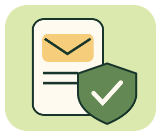

PAUSE / CHECK / CHOOSE
數位生活
防詐練習場
不是每則通知都是詐騙，也不是寫得很正式就可信。
先停一下，親手查證，再決定下一步。

12 個原創虛構情境，含正常通知。所有網址都是不可連線的示範文字，不提供真的掃碼、下載、登入或付款。查證回覆為預寫模擬，不是即時查詢。無帳號、儲存或上傳，重新整理會清空本輪。
① 先看看細節
② 從哪裡確認？
點選方式後才會揭露那個管道實際查到的內容。不同管道不保證取得相同證據。
目前模擬情況
③ 根據你查到的資料判斷
④ 下一步怎麼做？
依實際交出或操作的內容選擇，不只看訊息可不可疑。
本輪回顧
帶回日常的三件事
- 急迫、利益或恐嚇都是停下查證的理由，不是單獨定罪證據。
- 用自己原有的 App、已知電話或自行查得的官方入口，不沿用可疑訊息提供的管道。
- 若已操作，依密碼、驗證碼、授權、付款等實際狀況求助，不因怕被責備而隱瞞。
延伸：CISA 防釣魚說明、165 全民防騙網。內容查核：2026-11-13；虛構情境不代表個別服務的真實規則。